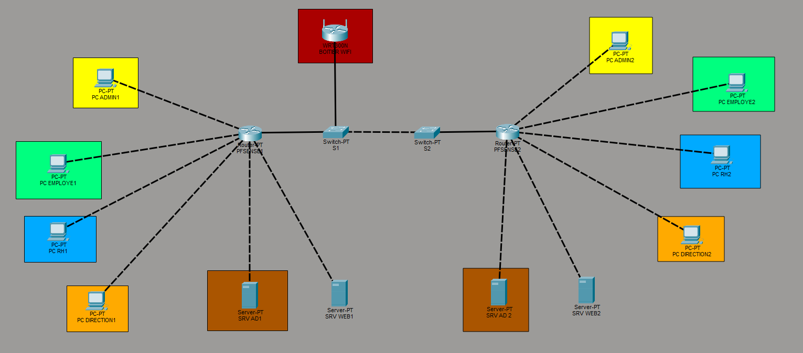

Leader mondial de l'industrie pharmaceutique.
Présentation et modernisation de l'infrastructure d'Avignon.
En 2009, les géants pharmaceutiques Galaxy (spécialisé en maladies virales, SIDA et hépatites, États-Unis) et Swiss Bourdin (médicaments conventionnels, Europe) ont uni leurs forces pour créer un leader mondial du secteur.
L'entité européenne a établi son siège administratif à Paris, avec un siège social monde à Philadelphie.
La recherche d'une optimisation de notre activité nous permet de réaliser des économies d'échelle cruciales.
Après deux années de réorganisation, GSB modernise aujourd'hui l'activité de visite médicale, avec la France comme témoin pour l'amélioration du suivi.
Déploiement de l'infrastructure réseau et système des nouveaux locaux d'Avignon.
Fournir un environnement hyper segmenté, sécurisé et interconnecté pour les différents services de l'entreprise GSB.

| VLAN | Nom | Usage | Plage IP |
|---|---|---|---|
| 10 | Employés | Postes de travail standards | 172.24.10.0/24 |
| 20 | RH | Ressources Humaines (Données sensibles) | 172.24.20.0/24 |
| 30 | Direction | Direction du site d'Avignon | 172.24.30.0/24 |
| 40 | Serveurs | Contrôleur de domaine et serveurs internes | 172.24.40.0/24 |
| 99 | Management | Administration équipements réseaux | 172.24.99.0/24 |
| 150 | Wi-Fi | Accès sans fil visiteurs | 172.24.150.0/24 |
Les réseaux communiquent. Le routage pfSense assure le transit des paquets entre les domaines 172.24.0.0 respectifs.
Configuration prévue pour assurer la haute disponibilité de l'annuaire entre les deux sites.
Finalisation de la DMZ avec l'intégration sécurisée du serveur MediaWiki.
Mise en place de règles de filtrage adaptées et strictes dans les pare-feux pfSense.